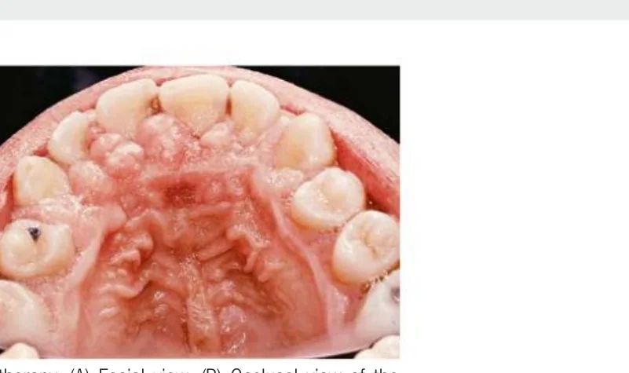

نسخه استخراجشده؛ ترجمه یا تأیید علمی انجام نشده است. وضعیت: captured
تنها سه دسته دارویی بزرگشدگی لثه ایجاد میکنند. این فهرست را کامل حفظ کن:

| دسته | داروهای شاخص | شیوع تقریبی |
|---|---|---|
| ضدتشنج | فنیتوئین | حدود ۵۰٪ |
| سرکوبکننده ایمنی | سیکلوسپورین | حدود ۲۵ تا ۳۰٪ |
| مسدودکننده کانال کلسیم | نیفدیپین، آملودیپین، وراپامیل، دیلتیازم | حدود ۱۰ تا ۲۰٪ |
🔑 نکته مشترک: هر سه دسته بر سوختوساز کلسیم داخل سلولی فیبروبلاستها اثر میگذارند و تعادل ساخت و تجزیه کلاژن را به سمت تجمع ماتریکس جابهجا میکنند. به همین دلیل داروهایی با کاربردهای کاملاً متفاوت، تصویر بالینی مشابهی میسازند.
⚠️ ترکیب سیکلوسپورین با یک مسدودکننده کانال کلسیم — که در بیماران پیوند کلیه شایع است — شدیدترین شکل بزرگشدگی را ایجاد میکند.
نقطه شروع: پاپیلای بیندندانی؛ سپس به لبه لثه گسترش مییابد.
محل غالب: سطح فاسیال نواحی قدامی.
قوام: سفت، صورتی و فیبروتیک در فنیتوئین؛ در سیکلوسپورین اغلب قرمزتر و پرعروقتر.
درد: ندارد، مگر آنکه التهاب ثانویه اضافه شود.
زمانبندی: معمولاً ظرف ۱ تا ۳ ماه پس از شروع دارو آغاز و حدود ۱۲ تا ۱۸ ماه بعد به فلات میرسد.
🔑 نواحی بیدندان درگیر نمیشوند.
اگر دارو بهتنهایی علت بود، باید تمام لثه به یک اندازه بزرگ میشد. اما فقط جایی بزرگ میشود که دندان و بیوفیلم وجود دارد. نتیجهگیری:
دارو شرط لازم است.
پلاک و التهاب موضعی، شدت را تعیین میکنند.
📌 پیامد بالینی مستقیم: با کنترل عالی پلاک، شدت بزرگشدگی بهطور چشمگیری کاهش مییابد — حتی اگر دارو ادامه یابد.
کنترل دقیق پلاک و جرمگیری — همیشه گام نخست. در موارد خفیف تا متوسط، اغلب همین کافی است.
مشورت با پزشک معالج برای بررسی امکان تعویض دارو:
فنیتوئین ⬅️ داروهای ضدتشنج جایگزین.
سیکلوسپورین ⬅️ تاکرولیموس (شیوع بسیار کمتر).
نیفدیپین ⬅️ مسدودکننده کانال کلسیم دیگر یا دسته دارویی دیگر.
⚠️ هرگز خودت دارو را قطع یا تغییر نده. این تصمیم با پزشک معالج است؛ بیماری زمینهای اولویت دارد.
برداشتن جراحی (ژنژیوکتومی یا فلپ) — فقط زمانی که بزرگشدگی پس از گامهای بالا همچنان مشکل عملکردی یا زیبایی ایجاد کند.
اگر دارو ادامه یابد و کنترل پلاک ضعیف بماند، عود پس از جراحی بسیار محتمل است — گاهی ظرف چند ماه. به همین دلیل جراحی بدون تثبیت بهداشت، تکرار همان چرخه است.
⚠️ اشتباه رایج ۱: نواحی بیدندان درگیر نمیشوند — کلید اثبات نقش پلاک.
⚠️ اشتباه رایج ۲: بزرگشدگی از پاپیلای بیندندانی آغاز میشود، نه از لثه چسبنده.
⚠️ اشتباه رایج ۳: جراحی آخرین گام است، نه نخستین.